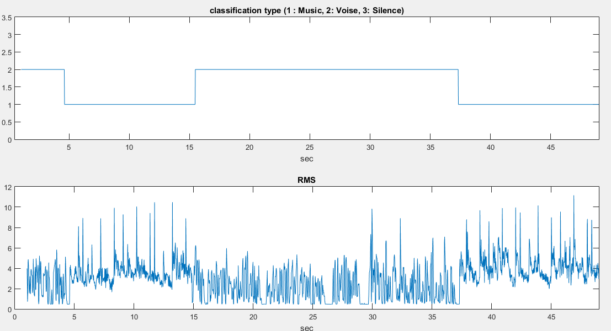
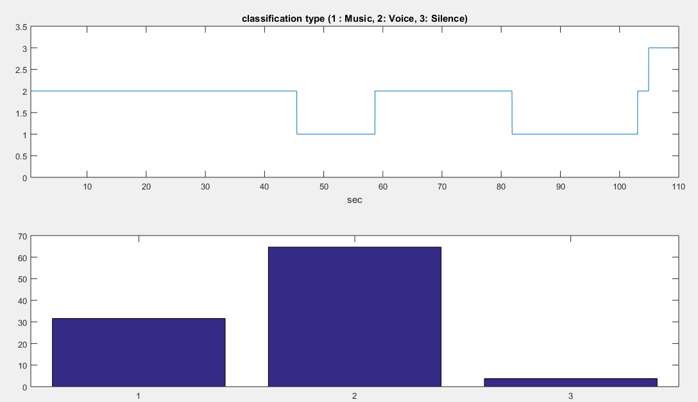

Audio Class Histogram
Abstract
A technique for Audio classification is presented in this project, it classifies audio stream into 3 classes- speech, music, and silence.
The proposed algorithm needs no training phase,
1. Introduction
Over the last several years, major efforts have been made to develop methods for extracting information from audio visual media
In this project we are concentrating on classification of an audio signal into music, speech and silence and we are creating audio class histogram for the same.
1.1 Introduction to Problem
Given an audio file, we have to extract features and use them to segment and classsify the audio data into speech, music, and silence
And to plot a histogram for the same
1.2 Figure

1.3 Literature Review
[1] C. Panagiotakis and G. Tziritas, a speech/music discriminator based on rms and zero-crossings, ieee transactions on multimedia, vol. 7, no. 1, feb. 2005.
[2] B. Kedem, Spectral analysis and discrimination by zero-crossings, Proc. IEEE, vol. 74
[3] C.Panagiotakis and G. Tziritas, a speech/music discriminator based on rms and zero-crossing,ieee transactions 2002.
1.4 Report Organization
2. Proposed Approach
In the first step given audio has been segmented into frames of 20ms each with an overlap of 10ms. Then feature vectors of each segment is extracted. First silence segments were identified by using minimum energy threshold, and for differentiating between music and speech we are using 5 feature vectors. The feature vectors used are given below
Normalized RMS variance
It is ratio of 'varience of RMS' to 'Square of RMS mean', In more than 88% voice audio files this feature vector has value more than 0.24
Probability of null zero-crossings
In the case silent interval the number of Zero crossings is null. In speech there are always some silent intervals. This feature vector has value more than 0.1 for speech.
Joint RMS/ZC measure
RMS and ZC are somewhat related for speech signals but not for music. So we have defined a function which tells about correlation between
RMS and ZC. It is close to zero for speech
Silent intervals frequency
It is frequency at which silent intervals are detected in audio file. Music has less silent interval in between hence it is usually lower for music. Higher probabilty of music if it is less than 0.6.
Maximal mean frequency
Voice waveforms are bandlimited by 3.2Khz. Hence their mean is less.
RMS values for Music and Speech
3. Experiments & Results
3.1 Dataset Description
We collected from various resources from internet, we also generated some dataset. Our dataset includes various genre of music, voice samples of male and female.
The test files and codes are
here
3.2 Results
The output is shown as a histogram. For a given audio file of 110 seconds, having music in 34 second, voice in 66 seconds and 10 seconds of silence.

1 denotes music
2 denotes voice
3 denotes silence
4. Conclusions
4.1 Summary
We got an accuracy of more than 90 percent.
4.2 Future Extensions
In the future, the methods introduced here could be extended
to a more detailed characterization and description of audio.
They may be used at the first hierarchical level of a classifier, and
then continue by classifying into more specific categories, for
example, classifying the music genre or identifying the speaker.